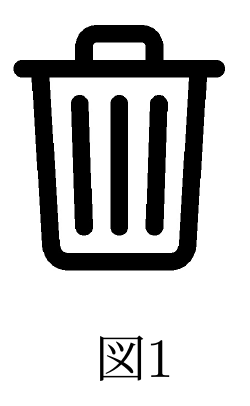
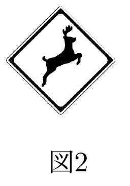
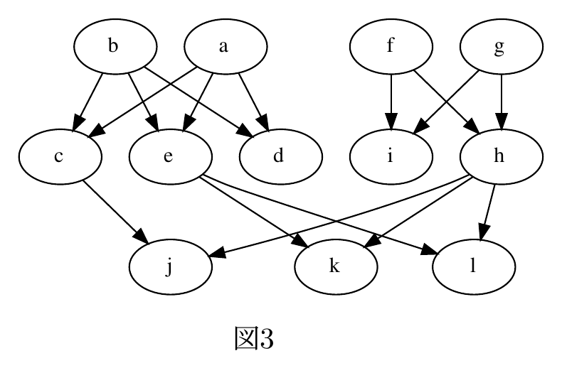
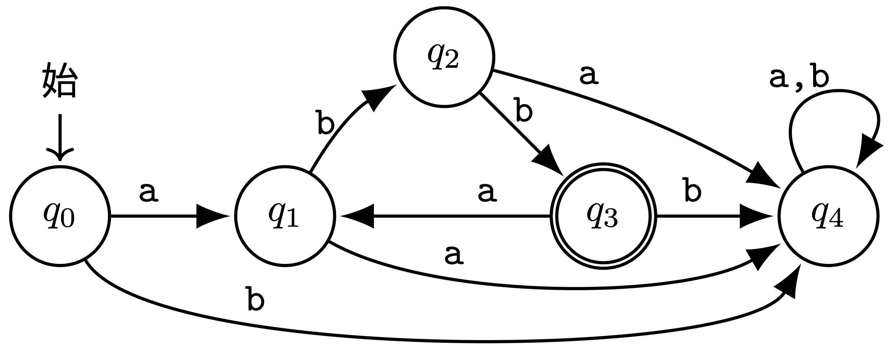
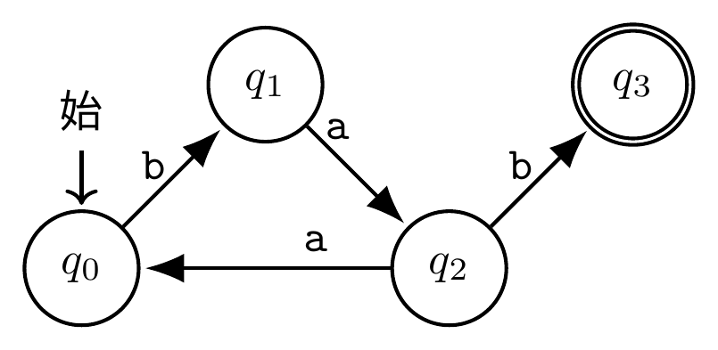

7月29日（火）3限・60分｜大問3（うち大問3は選択）
現代のコンピュータのユーザインタフェースではAが採用されており、ピクトグラムによる情報表現をいたる所で見いだすことができる。たとえば図1は、ファイル削除に使われるアイコンであり、「ファイルを削除する」という操作を「ごみを捨てる」という行為で表現しているためBを用いた表現であるといえる。道路標識も多くのピクトグラムが採用されており、パターン表現的側面と、記号表現的側面を効果的に使い分けているといえる。図2の標識は「動物が飛び出すおそれあり」を示すものであり、自然言語を解さなくても現実世界との対応づけができれば意味を理解できるため、パターン表現の側面が強い。また、動物一般を鹿のピクトグラムで表現していることからCと呼ばれる表現技法を含んでいるといえる。一方、記号表現の側面が強いピクトグラムを用いて情報を伝達する場合には、記号の恣意性に注意しながらデザインする必要がある。
(1) 上の文章の空欄を、語群から最も適切な語を選んで埋めよ。但し、同じ記号の空欄には同じ語が入るものとし、同じ語を二度使ってはならない。（語群：明喩・隠喩・提喩・グラフィカルモデル・デスクトップメタファ・アフォーダンス理論）


語群は「明喩・隠喩・提喩・グラフィカルモデル・デスクトップメタファ・アフォーダンス理論」の6語で、実際に使うのは3語だけ（残り3語はダミー）。
A = デスクトップメタファ ファイルやフォルダ、ごみ箱といった、机の上の物理的な整理整頓の比喩でコンピュータのUI全体を組み立てる考え方。
B = 隠喩（メタファー） 「削除」という抽象的な操作を、「ごみを捨てる」という具体的な別の行為になぞらえて表現している。「〜のようだ」という形を明示しない、暗黙の比喩。
C = 提喩（シネクドキ） 「動物一般」という広いカテゴリを、「鹿」という一つの具体例（種）で代表させて表現する技法。逆に、部分で全体を指す（またはその逆）のが提喩の特徴。
明喩：「〜のようだ」など、たとえることを明示する比喩。／隠喩：たとえの標識を使わず、あるものを別のものとして表す比喩。／提喩：種で類を、部分で全体を表すなど、包含関係を利用する表現。／グラフィカルモデル：対象間の関係や確率的依存関係をグラフで表すモデル。／デスクトップメタファ：ファイル・フォルダ・ごみ箱など、机上の仕事になぞらえてGUIを構成する考え方。／アフォーダンス理論：環境や物の性質が行為者にどのような行為の可能性を与えるかを捉える理論。
「動物が飛び出すおそれあり」を表現するための、より記号表現的側面が強い表現、あるいはよりパターン表現的側面が強い表現を、具体例を挙げてどちらか一つ説明せよ。
より記号表現的な例：文字だけで「動物注意」あるいは「!」の警告マークのみを表示する標識。動物の見た目を一切模しておらず、意味の対応づけは完全に社会的な取り決め（言語・記号への慣れ）に依存する。
より パターン表現的な例：実際の鹿の写真、あるいは鹿が道路に飛び出す瞬間を写実的に描いたイラストを掲げる。現実の見た目そのものに近いほどパターン表現（似せる表現）としての度合いが強くなる。図2のピクトグラムは、この2つの中間（写実ではないが動物のシルエットという形で現実に似せている）に位置する。
記号の恣意性とはどういうことか、記号の恣意性に起因して情報の伝達に混乱が生じうる例を示しながら説明せよ。
記号の恣意性とは、記号の形（見た目・音・文字列など）と、それが指し示す意味との間に、必然的・論理的なつながりがなく、単に社会的な取り決め（コンベンション）によって結びついているにすぎない、という性質のことである。
混乱の例：非常口を示す緑色のピクトグラム（走る人のマーク）は日本発祥の国際規格として広く普及しているが、これを知らない文化圏の人にとっては色や図形だけから「非常口」という意味を論理的に導き出すことはできない。同様に、ゴミ箱アイコンが「削除」を意味することも、その取り決めを知らなければ「保存」や「移動」だと誤解されうる。記号の対応関係を知らない・異なる文化的背景を持つ受け手には、意図した意味が正しく伝わらず誤解が生じる。
プログラム内蔵方式のコンピュータはA型コンピュータとも呼ばれ、プログラムとデータの両方をBに格納することに特徴がある。Bに格納されたプログラムに従って計算を進める装置はCと呼ばれ、この装置は、実際に計算を行うDと、Dの駆動やBへの読み書きを担うEから構成される。Dは基本的に、Fに保持されたデータを読み込んで計算を行い、計算結果もFに書き込む。Fに書き込まれた情報は必要に応じてBに書き写されるが、その際、書き込み先はGと呼ばれる数値によって選択される。
語群から最も適切な語を選んで埋めよ。同じ記号の空欄には同じ語が入るものとし、同じ語を二度使ってはならない。（語群：Cookie・DAG・DHCP・XOR・アセンブリ・アドレス・インタプリタ・カーネル・シャノン・チューリング・ビット・フォン・ノイマン・マルチタスク・万能機械・中央処理装置・主記憶装置・仮想記憶・出力装置・制御装置・演算レジスタ・演算装置）
A = フォン・ノイマン（プログラム内蔵方式＝フォン・ノイマン型）
B = 主記憶装置（プログラムとデータを同じメモリ空間に置く）
C = 中央処理装置（CPU。主記憶のプログラムを実行する装置）
D = 演算装置（ALU。実際の計算を担当）／E = 制御装置（演算装置の駆動と主記憶への読み書きを指揮）
F = 演算レジスタ（演算装置が直接読み書きする高速な記憶場所）
G = アドレス（主記憶上の書き込み先を指定する番地）
Cookie：Webサイトがブラウザ側へ保存させる小さな状態情報。／DAG：閉路を持たない有向グラフ（有向非巡回グラフ）。／DHCP：端末へIPアドレスなどの設定を自動配布するプロトコル。／XOR：2入力が異なるときだけ1になる排他的論理和。／アセンブリ：機械語命令を人が扱いやすい記号で表す低水準言語、またはその記述。／アドレス：主記憶などの格納位置を指定する番地。
インタプリタ：プログラムを逐次解釈しながら実行する処理系。／カーネル：資源管理やプロセス制御を担うOSの中核。／シャノン：情報理論を体系化したクロード・シャノンを指す人名。／チューリング：計算可能性を形式化したアラン・チューリングを指す人名。／ビット：0か1の二値で表す情報量・データの基本単位。／フォン・ノイマン：合わせて「フォン・ノイマン」。プログラム内蔵方式の計算機構成に名を残す人名。
マルチタスク：複数の処理を切り替えながら並行して進めるOSの機能。／万能機械：記述された任意のチューリング機械の動作を模倣できる抽象機械。／中央処理装置：命令を読み出して解釈・実行するCPU。／主記憶装置：実行中のプログラムとデータを保持しCPUが直接アクセスする記憶装置。／仮想記憶：主記憶と補助記憶を用いて、実メモリより広い連続的な記憶空間を見せる仕組み。／出力装置：計算結果を画面・紙・音などとして外部へ提示する装置。
制御装置：命令を解釈し、演算や記憶装置とのデータ移動を指揮するCPUの部分。／演算レジスタ：演算対象や結果を一時保持するCPU内部の高速記憶。／演算装置：算術演算・論理演算を実行するALU。
CPU（中央処理装置）は演算装置（ALU: Arithmetic Logic Unit）と制御装置（Control Unit）からなり、 演算装置が実際の四則演算・論理演算を行い、制御装置が「次に何の命令を読み、演算装置に何をさせるか」を 指揮する。演算装置が直接読み書きするのは（低容量・高速な）演算レジスタであり、主記憶装置（メモリ） との間でデータをやり取りする際にはアドレス（番地）を指定する。プログラムとデータを区別なく同じ 主記憶に置く、というのがプログラム内蔵方式（フォン・ノイマン型）の最大の特徴で、これにより プログラム自体をデータとして書き換える（自己書き換え・ロード）ことが可能になる。
デジタルコンテンツの著作権を適切に管理するための技術・仕組みはAと呼ばれる。B方式に基づくWinnyなどが多くの著作権侵害をもたらしたこともあり、現代のAは注意深く設計されている。デジタルコンテンツのデータをコンテンツ提供者のCとコンテンツ閲覧ソフトの間の通信で提供する。閲覧ソフトは前もってDとEの組を作成し、DをCに登録する。各デジタルコンテンツの利用に際しては、Cは新しく生成した鍵Kでコンテンツを暗号化し、鍵Kを含むライセンスファイルとともに閲覧ソフトに送る。ライセンスファイルは閲覧ソフトのDで暗号化されている。閲覧ソフトは、ライセンスファイルをEで復号することで、鍵Kを入手し、コンテンツを復号する。この時、ライセンスファイルに付加されているFを確認することで、ライセンスファイルが適切なCによって作られ改ざんされていないことも確かめる。Fを確認するためにはCのGを入手する必要がある。認証局を通じて信頼性の高いGを得る仕組みをHと呼ぶ。
語群から最も適切な語を選んで埋めよ。同じ記号の空欄には同じ語が入るが、同じ語を複数回用いてもよい。（語群：DHCP・DRM・P2P・PGP・PKI・SaaS・SSH・Tor・TLS・一方向ハッシュ関数・共通鍵・クライアント・公開鍵・サーバ・ディジタル署名・電子指紋・秘密鍵・防火壁・レイテンシ）
A = DRM（Digital Rights Management）／B = P2P
C = サーバ（コンテンツ提供者側）
閲覧ソフトは自分のD = 公開鍵とE = 秘密鍵の組を作り、公開鍵Dをサーバに登録する。 サーバは新しい鍵Kでコンテンツを暗号化し、ライセンスファイル（鍵Kを含む）を閲覧ソフトの公開鍵Dで暗号化して送る＝ 「Dで暗号化」できるのは公開鍵暗号方式の性質上、対応する秘密鍵Eを持つその閲覧ソフトだけが復号できる、という設計。 閲覧ソフトはEでライセンスファイルを復号して鍵Kを入手する。
F = ディジタル署名 サーバがライセンスファイルに付けた署名。これを検証することで、 改ざんされていないこと・本当にそのサーバが発行したものであることを確認できる。検証にはサーバの G = 公開鍵が必要（ここでは「公開鍵」の語を2度使ってよい設問）。
H = PKI（公開鍵基盤） 認証局（CA）を介して、なりすましでない正しい公開鍵であることを保証する仕組み。
DHCP：端末へIPアドレスなどのネットワーク設定を自動配布するプロトコル。／DRM：デジタル著作物の利用・複製条件を技術的に管理する仕組み。／P2P：端末同士が対等に直接データや資源を交換する構成。／PGP：暗号化と署名により主に電子メールやファイルを保護する仕組み。／PKI：認証局と電子証明書により公開鍵の正当性を保証する公開鍵基盤。
SaaS：ソフトウェアをネットワーク越しのサービスとして利用する提供形態。／SSH：遠隔ログインやコマンド実行を暗号化するプロトコル。／Tor：通信を複数の中継点で多層暗号化して匿名性を高めるネットワーク。／TLS：通信相手の認証、暗号化、改ざん検知を提供するプロトコル。／一方向ハッシュ関数：入力から固定長の値を計算できる一方、その値から元入力を求めることが困難な関数。
共通鍵：暗号化と復号に同じ秘密の鍵を使う方式、またはその鍵。／クライアント：サーバへ処理や資源を要求する側。／公開鍵：鍵ペアのうち公開し、暗号化や署名検証に用いる鍵。／サーバ：クライアントの要求に応じてコンテンツや処理を提供する側。／ディジタル署名：秘密鍵で生成し公開鍵で検証することで、作成者と改ざんの有無を確認する仕組み。
電子指紋：データをハッシュして得られる、その内容を識別する短い値。／秘密鍵：所有者だけが保持し、復号や署名生成に用いる鍵。／防火壁：規則に基づきネットワーク通信を許可・遮断するファイアウォール。／レイテンシ：要求から応答までなど、通信・処理に生じる遅延時間。
この問題の設計は非常に典型的なパターンである：①受信者（閲覧ソフト）が公開鍵・秘密鍵の組を作り、 公開鍵だけを送信者（サーバ）に渡しておく。②送信者は「相手の公開鍵」でデータを暗号化して送る →相手（対応する秘密鍵を持つ人）にしか復号できない（機密性の確保）。③さらに送信者は自分の 秘密鍵で署名し、受信者は送信者の公開鍵で検証する→なりすまし・改ざんを検知できる（真正性・完全性の確保）。 「公開鍵で暗号化 → 秘密鍵で復号」（機密性）と「秘密鍵で署名 → 公開鍵で検証」（認証）は逆向きの 使い方である点に注意。PKIは、この「本当にその人（サーバ）の公開鍵か」を認証局が保証する仕組み。
2個体が親となり子を作る生物の親子関係を、親から子へ向かう有向エッジで表現する。図3は「aとbの子がc,d,e、fとgの子がh,i、cとhの子がj、eとhの子がk,l」という例である。

P1・P2・S0・S1・S2・Sn・Sn+1・n・X・Y・から出る・から出ない・へ向かう・へ向かわない・と接続する・と接続しない・和集合・差集合・積集合・含まれる・含まれない・一致する・一致しない （同じ記号の空欄には同じ語が入るものとし、同じ語を二度使ってはならない）
各個体の親はたかだか2個体である。このことはグラフ上のどのような点に表れるか。
このグラフのエッジは親から子へ向き、子に当たる個体XについてXへ向かうエッジの他端がXの親になる。したがって、あるノードへ入るエッジ1本が親1個体に対応する。「親が高々2個体」は、すべてのノードの入次数（そのノードへ向かうエッジ数）が0・1・2のいずれかで、3以上にはならないこととして表れる。
1. 入力：ある個体に対応するノードX
2. Xへ向かうエッジの他端のノードをP1およびP2とする。
3. P1Aエッジの他端のノードの集合をS1とする。
4. P2Aエッジの他端のノードの集合をS2とする。
5. S1とS2のBを出力して停止する。
入力XがkのときS1,S2はそれぞれ何か。
A = へ向かう（P1・P2それぞれの親を求めるので、手順2と同じ「へ向かうエッジ」を使う）
B = 和集合（P1の親とP2の親を合わせたものが「祖父母」全員になる）
X=kの親はe,hなので、P1=e, P2=hとしてよい。S1 = eの親 = {a, b}、S2 = hの親 = {f, g}。祖父母 = S1∪S2 = {a, b, f, g}。
1. 入力：ある個体に対応するノードX
2. Xへ向かうエッジの他端のノードをP1およびP2とする。
3. P1Cエッジの他端のノードの集合をS1とする。
4. P2Cエッジの他端のノードの集合をS2とする。
5. S1とS2のDからEを除いたものを出力して停止する。
入力XがkのときS1,S2はそれぞれ何か。
C = から出る（P1・P2それぞれの「子」を求めるので、今度は出るエッジをたどる）
D = 積集合（P1の子でもありP2の子でもある個体＝両親が共通の個体の集合）
E = X（自分自身は積集合に含まれてしまうので、それを除く）
X=kの親はe,h。P1=eとするとS1 = eの子 = {k, l}。P2=hとするとS2 = hの子 = {j, k, l}。積集合 S1∩S2 = {k, l}。ここからX=kを除くと {l}。（lはkと親e,hを共通に持つ「きょうだい」。jはhの子だがeの子ではないので半分だけ親を共有する関係にとどまり、除外される。）
1. 入力：2個体に対応するノードXとY
2. S0={X}、n=0とする。
3. FがGにH限り、以下を繰り返す：SnのいずれかのノードIエッジの他端のノードの集合をSn+1とし、nの値を1増やす。
4. nを出力して停止する。
入力Xがk、Yがcのとき、S1,S2,S3はそれぞれ何か。
F = Y、G = Sn、H = 含まれない （「YがSnに含まれない限り繰り返す」＝Yがまだ到達済み集合に入っていない間はループを続ける）
I = と接続する 親等は「親子関係でつながる」回数であり、親→子・子→親のどちらの 向きに数えても1回でよいので、エッジの向きを問わない「と接続する」を使う（へ向かう／から出る、のような 向き限定の語では、親等の計算として不十分になる）。
X=k, Y=c として追跡する（各ステップでSnと接続する全ノードの和集合をSn+1とする）。
S0 = {k}。kと接続 = 親e,h → S1 = {e, h}。
e,hのそれぞれと接続するノードの和集合：eの接続先={a,b,k,l}、hの接続先={f,g,j,k,l} → S2 = {a,b,f,g,j,k,l}。
S2の各ノードと接続するノードの和集合：a→{c,d,e}、b→{c,d,e}、f→{h,i}、g→{h,i}、j→{c,h}、k→{e,h}、l→{e,h}
を合わせて S3 = {c, d, e, h, i}。
ここでY=c が S3 に含まれるのでループが止まり、n=3 を出力する（k–h–j–c、または k–e–a–c のように
3本のエッジで結ばれる最短経路が存在する）。
P1・P2：入力Xの2個体の親を一時的に表す変数。／S0：探索開始時の集合で、この問題では{X}。／S1・S2：文脈により、P1・P2から得た集合、または探索の第1層・第2層を表す。／Sn：探索のn段階目に得られるノード集合。／Sn+1：Snから1本のエッジをたどって次に得る集合。／n：探索段階、すなわち始点からたどったエッジ数。／X・Y：入力として与える個体（始点と目標）を表す変数。
から出る：そのノードを始点とする有向エッジを選ぶ。／から出ない：そのノードを始点としないエッジを表す。／へ向かう：そのノードを終点とする有向エッジを選ぶ。／へ向かわない：そのノードを終点としないエッジを表す。／と接続する：向きを問わず、そのノードと辺を共有する。／と接続しない：そのノードと辺で直接結ばれていない。
和集合：どちらか一方以上の集合に属する要素を集めた集合。／差集合：一方の集合から他方に含まれる要素を除いた集合。／積集合：両方の集合に共通して属する要素の集合。／含まれる：対象要素が集合の要素である。／含まれない：対象要素が集合の要素ではない。／一致する：二つの値・集合が等しい。／一致しない：二つの値・集合が等しくない。
問4のアルゴリズムは、グラフ理論における幅優先探索（BFS）そのもの——始点Xから 「1エッジで到達できるノード」「2エッジで到達できるノード」…と層ごとに広げていき、目的のノードYが 初めて現れた層の番号が、2ノード間の最短距離（ここでは「親等」）になる。有向グラフであっても、 親子関係のような対称的な「つながり」を数えたいときは、エッジの向きを無視した無向グラフとして 扱う（「と接続する」がその処理にあたる）のがポイント。
問題A・Bのいずれか一方を選択（担当教員の指示があればそれに従う）。ここでは両方を掲載する。
インターネットを活用した選挙活動について、情報の流通の観点からみた候補者・有権者それぞれのメリットを2つずつ挙げよ。
候補者にとってのメリット：①新聞・テレビ等の既存メディアの報道量に依存せず、低コストで大量の有権者に直接・即時に情報発信できる。②SNS上の反応（シェア・コメント数など）を即座に把握し、双方向のやり取りを通じて訴求内容を調整できる。
有権者にとってのメリット：①候補者が発信する一次情報に、メディアによる要約・編集を介さず直接アクセスできる。②SNS上で他の有権者と政策について意見交換ができ、多様な視点から候補者を比較検討しやすくなる。
インターネットを活用した選挙活動で生じうる、情報の流通または内容に関する問題を2つ挙げよ。
代表例は二つある。第一に、投稿・転載の速さが検証の速さを上回り、デマや切り取られた情報が訂正より先に広く届く問題である。候補者への誤った評価が形成されると、後の訂正だけでは影響を取り消しにくい。第二に、推薦アルゴリズムや人間の選択によって似た意見ばかりに触れるフィルターバブル／エコーチェンバーが生じ、反対意見や共通の事実認識に接する機会が減る問題である。その結果、判断材料の偏り、社会の分断、特定集団を狙う扇動や世論操作につながりうる。
ソーシャルメディアでの情報流通では、メディアの運営組織に新たにどのような責任が生じるか、中立性の担保に着目して論ぜよ。
新聞・テレビ・ラジオは編集者による取材・校閲・放送法上の政治的公平性の確保などを経て情報を発信しており、発信者と受け手の間に「編集責任を負う主体」が明確に存在した。一方ソーシャルメディアでは、候補者の発信が編集を経ずに直接有権者に届き、プラットフォーム側は「編集者」ではなくレコメンドアルゴリズムによって情報の見え方（誰に何がどれだけ表示されるか）を左右する。したがって、プラットフォーム運営組織には、①アルゴリズムによる情報表示が特定の候補・立場に偏らないようにする責任、②誤情報・扇動的内容に対するファクトチェックや注意喚起表示、③候補者間の広告・露出機会の公平性を確保する責任が新たに生じる。
サイバーカスケード現象とは何か。この現象が選挙において問題となりうる理由も述べよ。
説明：インターネット上で人々が自分の意見に近い情報・コミュニティばかりを選択的に閲覧するようになった結果、同じ立場の人同士の議論が繰り返され、集団としての意見がより極端な方向へと雪崩のように増幅されていく現象。
選挙での問題点：支持者どうしの内輪の議論が過激化することで、対立候補への攻撃や陰謀論的な言説が検証されないまま強化されやすく、有権者間の分断が深まり、穏健な熟議に基づく投票判断を妨げるおそれがある。
インターネット投票実施の情報面での便益を2つ挙げよ。また機密性・完全性・可用性が担保されない場合に生じるリスクをそれぞれ述べよ。
便益：①開票・集計を即時かつ自動的に行え、迅速に結果を得られる。②投票所に行くのが困難な有権者（海外在住者、身体的な制約がある人など）の投票参加を促し、より多くの民意を集約できる。
リスク：機密性が損なわれると、誰がどの候補に投票したかという投票の秘密が漏れ、買収・強要のおそれが高まる。完全性が損なわれると、投票データが改ざんされ、実際の民意と異なる結果が公表されるおそれがある。可用性が損なわれると、システム障害やサイバー攻撃によって投票そのものができなくなり、投票の機会が奪われる。
優=aaa、良=bbb、可=abb、不可=baa、未受験=babという符号（表1）でn人分（n>0）の成績を連結した文字列を考える。例えば"優良可良"（n=4）という成績の列であれば aaabbbabbbbb となる。n人の成績列を符号化した文字列を、図4の有限状態機械（状態q0が始状態、q3が受理状態）に与えて受理状態になったとすると、元の成績について何が言えるか。

表1の各符号を、区切り位置（＝q0またはq3、この2状態は遷移先が完全に同じ「同値」な状態）から図4に与えて追跡すると：
q4は a, b のどちらを読んでも自分自身に戻る非受理の「わな」状態であり、一度q4に入ると二度と抜け出せない。したがって、5種類の符号のうち区切り位置（q0/q3）から読んでq3に戻れるのは「可」（abb）だけであり、それ以外の符号（優・良・不可・未受験）が1人分でも含まれていれば、その時点で永久にわなに落ち、文字列全体が最終的に受理されることはない。
よって、n人分の文字列が図4で受理されたということは、n人全員の成績が「可」であったということが分かる。
各成績が独立に等確率で現れるとして、平均符号長を3より小さくする、まぎれのない（瞬時に復号できる）符号化方法を一つ答えよ。
5種類は等確率（各1/5）なので、ハフマン符号化の考え方に従い、長さ2の符号を3つ、長さ3の符号を2つ配分すればよい。例えば：
aa, ab, ba はどれも「不可(bba)」「未受験(bbb)」の接頭辞になっておらず（bとaの並びが異なる）、瞬時符号（接頭符号）として復号にまぎれが生じない。平均符号長は $(2+2+2+3+3)/5 = 12/5 = 2.4$ 文字で、3より小さい。
優,良,可,不可,未受験の確率が$\frac14,\frac12,\frac18,\frac1{16},\frac1{16}$のとき、平均符号長を最小にする符号化方法と、そのときの平均符号長を答えよ。
ハフマン符号化：確率の小さい2つずつを繰り返し併合していく。
この併合木から符号長を読み取ると、良=1文字、優=2文字、可=3文字、不可・未受験=4文字。例えば：
平均符号長は、これがちょうどエントロピー（各確率が2の負整数乗のため、ハフマン符号は下限を過不足なく達成する）に一致する：
確率が一般に $p_1,\ldots,p_5$ であるとき、符号化の工夫により平均符号長をどこまで短くできるか。
情報源符号化定理（シャノン）により、平均符号長はその情報源のエントロピー $H=-\sum_i p_i\log_2 p_i$ を下回ることはできないが、符号化方法（ハフマン符号など）を工夫することでエントロピーに限りなく近づけることができる。特に各確率がちょうど2の負整数乗であるとき（問題B(3)のように）、ハフマン符号はこの下限＝エントロピーを過不足なく達成できる。
問題B(3)で答えた符号化方法についてn人分（n>0）を連結した文字列（かつそれらのみ）を受理する有限状態機械を図示せよ。
符号（良=a, 優=ba, 可=bba, 不可=bbba, 未受験=bbbb）は接頭符号なので、「今どの符号の途中まで 読んだか」だけを状態として持てばよい。開始専用の状態 $S_{\text{start}}$（非受理）と、 「ちょうど1つ以上の符号を読み終えた直後」を表す受理状態 $S_0$、さらに「bが連続して何個続いたか」 を表す $S_1,S_2,S_3$ を用意する。
表1の符号化方法を考える。与えられたa,bから成る文字列が、1人以上の成績簿に対応する文字列であり、さらに未受験が全体でちょうど1人であることを表す文字列であるかを知りたい。その時かつその時のみ受理する有限状態機械を図示せよ。但し、図5の有限状態機械に辺や頂点を加えて作成すること。

図5は「不可(baa)を0回以上繰り返した直後に未受験(bab)がちょうど1回現れる」という特殊ケースしか扱えない （優・良・可は読めず、未受験の2回目を検出する仕組みもない）。これを一般化するには、 q0,q1,q2,q3の4状態と6本の辺はそのまま残し、以下を書き加える：
こうして出来上がる機械は、元の図5の4状態・6辺に、qA,qAA,qAB,qBB（q0側の優・良・可用）、 q1′,q2′,qA′,qAA′,qAB′,qBB′（q3側の複製）、qX（拒否わな）の合計11状態を書き加えた 15状態のオートマトンになる。受理状態はq3のみ（変更なし）。 q0を起点に読んでいる間（未受験がまだ0回）はq0/q1/q2/qA/qAA/qAB/qBBの間を巡り、 未受験をちょうど1回読んだ瞬間にq3へ移って以降はq3/q1′/q2′/qA′/qAA′/qAB′/qBB′の間を巡る、 2つ目の未受験を読もうとした瞬間だけqXに落ちて二度と受理されなくなる、という構造になっている。
ある符号語がどれも他の符号語の接頭辞になっていない符号を接頭符号（瞬時符号）と呼び、区切り記号なしで 先頭から一意に復号できる。ハフマン符号は、出現確率の低い記号ほど長い符号を、高い記号ほど短い符号を 割り当てることで平均符号長を最小化する手続き（確率の小さい2つを繰り返し併合して二分木を作る）で、 各確率が2の負整数乗のときに限り、シャノンの情報源符号化定理が定める下限（エントロピー）を 過不足なく達成する。また「複数の判定条件を同時に満たすか」を1つの有限状態機械でチェックしたいときは、 各条件をそれぞれ状態遷移で表す機械を作り、状態の組（直積）を新しい1つの状態とする直積構成法 が定石。